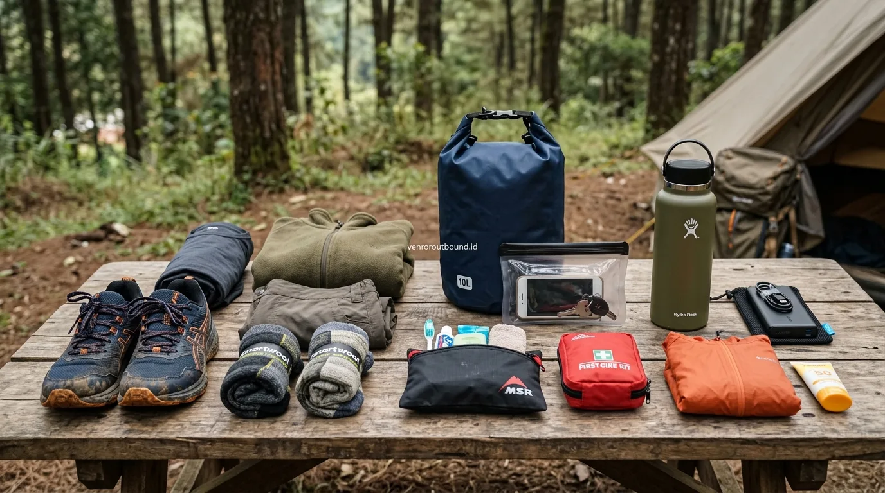

1. Prinsip Dasar Packing Ringan & Efisien untuk Kegiatan Luar Ruang
Jawaban singkat: Perlengkapan pribadi sangat memengaruhi kenyamanan saat mengikuti outbound plus rafting dan camping di alam terbuka. Peserta sebaiknya membawa pakaian ganti berbahan nyaman dan cepat kering (quick-dry), alas kaki yang sesuai medan dan memiliki daya cengkeram baik, perlengkapan hujan, obat pribadi, perlengkapan mandi, botol minum, perlindungan dari matahari, serta tas kedap air (dry bag) untuk barang yang tidak boleh basah.
Kegiatan outbound yang dikombinasikan dengan menginap di tenda (camping) selama dua hari satu malam menawarkan pengalaman petualangan yang otentik. Peserta diajak menyatu dengan alam, menikmati api unggun di bawah langit malam pegunungan, serta menghadapi berbagai tantangan permainan dinamika kelompok di lapangan terbuka.
Namun, kenyamanan dan kesehatan Anda selama berkemah sangat ditentukan oleh apa yang Anda bawa di dalam tas ransel. Kekurangan perlengkapan dasar—seperti tidak membawa baju hangat saat suhu malam turun atau salah memilih sepatu licin—dapat mengubah liburan seru menjadi pengalaman yang melelahkan. Sebaliknya, membawa terlalu banyak barang berlebihan (overpacking) akan membebani mobilitas Anda selama berpindah lokasi.
Prinsip utama dalam mengemas barang untuk petualangan 2 hari adalah: bawa barang fungsional, berbahan ringan, mudah kering, dan terlindungi dari kelembapan air.
2. Manajemen Pakaian: Dari Aktivitas Basah hingga Baju Tidur Hangat
Dalam agenda outbound camping, tubuh Anda akan mengalami transisi kondisi fisik dari berkeringat saat games siang, basah kuyup saat sesi air, hingga terpapar hembusan angin dingin saat malam tiba. Karena itu, terapkan sistem pembagian pakaian berlapis (layering system):
A. Pakaian Aktivitas Utama (Daytime & Games)
Gunakan kaus berbahan sintetis (polyester, dry-fit, atau nilon) dan celana training/cargo stretch yang fleksibel. Bahan sintetis memiliki sirkulasi udara baik, menyerap keringat tanpa menahan kelembapan, serta cepat kering saat terkena cipratan air atau gerimis ringan.
B. Pakaian Khusus Aktivitas Basah (Rafting / Water Games)
Jika itinerary mencakup outbound plus rafting atau susur sungai, siapkan kaus lengan panjang dan celana panjang berbahan lycra/quick-dry tipis. Pakaian lengan panjang melindungi kulit tangan dan kaki dari gesekan bebatuan sungai serta sengatan sinar matahari langsung.
C. Pakaian Hangat & Baju Tidur Malam di Tenda
Suhu udara di area perkemahan pegunungan (seperti kawasan Batu, Pacet, atau Trawas) dapat turun drastis di malam hari (mencapai 15°C–18°C). Siapkan satu set pakaian katun bersih yang tebal, jaket windbreaker/fleece bertudung (hoodie), celana tidur panjang, serta kaos kaki berbahan wol atau katun tebal khusus untuk tidur.
3. Memilih Alas Kaki yang Tepat: Sepatu Olahraga vs Sandal Gunung
Cedera yang paling sering dialami peserta outbound umumnya berkaitan dengan pergelangan kaki (keseleo/sprain) dan luka lecet akibat pemilihan alas kaki yang tidak sesuai dengan kontur tanah.
| Jenis Alas Kaki | Keunggulan | Kesesuaian Aktivitas |
|---|---|---|
| Sepatu Olahraga Bertali (Running / Trail Shoes) | Meredam benturan tumit, melindungi seluruh bagian kaki dari kerikil dan benturan akar | Sangat disarankan untuk team building darat, fun games di rumput, dan senam pagi |
| Sandal Gunung Bertali (Outdoor Sandals) | Cepat kering, fleksibel, memiliki sol beralur tajam untuk medan basah berlumpur | Cocok untuk aktivitas santai di camp, trekking ringan, dan area sanitasi |
| Sepatu Air / Neoprene Water Shoes | Daya cengkeram tinggi di batu kali licin, tidak menyimpan air, melindungi jari kaki | Paling ideal untuk aktivitas arung jeram (rafting) dan susur sungai |
Peringatan Penting: Hindari menggunakan sandal jepit biasa tanpa tali belakang, sepatu berbahan kanvas tipis (flat shoes), atau sandal selop berbahan licin. Alas kaki tanpa pengikat tumit sangat mudah terlepas di lumpur dan berisiko tinggi menyebabkan cedera pergelangan kaki.

4. Proteksi Elektronik, Obat Pribadi, & Perlengkapan Personal Care
Kondisi alam terbuka memiliki tingkat kelembapan tinggi dan paparan elemen alam yang dapat merusak barang bawaan penting Anda jika tidak dikemas secara cermat:
A. Dry Bag & Waterproof Pouch
Bawalah satu buah dry bag berkapasitas 5 hingga 10 liter. Masukkan seluruh perangkat elektronik (ponsel, power bank, kabel charger), dompet, dan dokumen identitas ke dalam dry bag sebelum Anda memulai aktivitas outdoor. Untuk ponsel yang aktif dibawa berfoto di area sungai, gunakan waterproof pouch dengan klip pengunci ganda.
B. Kotak Obat-obatan Pribadi
Meskipun panitia outbound menyediakan kotak P3K standar, Anda wajib membawa obat-obatan pribadi yang rutin dikonsumsi (misalnya obat alergi, inhaler asma, obat lambung/maag, obat pereda nyeri, atau tetes mata). Masukkan juga minyak kayu putih, plester luka cepat, dan balsem pereda pegal.
C. Perlindungan dari Matahari dan Serangga
Gunakan tabir surya (sunscreen SPF 30+) pada wajah dan tangan sebelum beraktivitas di bawah terik matahari. Bawa juga topi lapangan (bucket hat) dan lotion anti-nyamuk/serangga untuk dioleskan pada sore dan malam hari di sekitar area perkemahan.
5. Checklist Lengkap Perlengkapan Pribadi 2 Hari 1 Malam
Gunakan daftar periksa praktis berikut sebelum menutup ritsleting ransel Anda:
Checklist Packing Outbound & Camping 2 Hari:
1. Pakaian & Perlindungan Tubuh:
- [ ] 2 Kaus aktivitas quick-dry (lengan pendek/panjang)
- [ ] 1 Set pakaian khusus basah untuk rafting/games air
- [ ] 1 Set pakaian hangat bersih untuk tidur malam di tenda
- [ ] 1 Set pakaian rapi untuk perjalanan pulang hari ke-2
- [ ] 1 Jaket tebal tahan angin (windbreaker/fleece jacket)
- [ ] 1 Jas hujan ponco ringan atau mantel lipat
- [ ] Pakaian dalam secukupnya (3-4 pasang)
2. Alas Kaki & Aksesori:
- [ ] Sepatu olahraga bertali (running/trail shoes)
- [ ] Sandal gunung bertali pengikat tumit
- [ ] 2-3 Pasang kaos kaki cadangan berbahan tebal
- [ ] Topi lapangan (bucket hat/caps) & kacamata hitam
3. Kebersihan & Personal Care:
- [ ] Handuk microfiber cepat kering (ukuran sedang)
- [ ] Perlengkapan mandi travel pack (sabun, sampo, sikat gigi)
- [ ] Sunscreen SPF 30+ & lotion anti-serangga/nyamuk
- [ ] Tisu basah dan tisu kering antiseptik
4. Elektronik & Outdoor Essentials:
- [ ] Power bank berkapasitas minimal 10.000 mAh + kabel charger
- [ ] Dry bag kapasitas 5L/10L & waterproof phone pouch
- [ ] Senter kecil / headlamp dengan baterai cadangan
- [ ] Botol minum isi ulang (tumbler) minimal 600 ml
- [ ] 3-4 Kantong plastik/polybag untuk pakaian kotor dan basah
- [ ] Kotak obat-obatan pribadi khusus
6. Kesalahan Packing Paling Umum & Barang yang Sebaiknya Ditinggal
Agar perjalanan Anda tetap nyaman, hindari kesalahan pengemasan berikut dan tinggalkan barang-barang yang tidak relevan dengan aktivitas alam bebas:
- Menggunakan Koper Roda (Trolley Luggage): Koper roda sangat sulit ditarik di atas medan tanah berkerikil, rumput basah, atau jalan setapak berbatu perkemahan. Gunakan ransel punggung (backpack) berkapasitas 30–45 liter atau duffel bag fleksibel.
- Membawa Perhiasan & Aksesori Mewah: Cincin, kalung emas, dan jam tangan mahal sangat rentan terlepas dan hilang di dasar sungai saat arung jeram atau tersangkut saat simulasi dinamika kelompok.
- Membawa Pakaian Berbahan Jeans Ketat: Celana denim yang basah akan menjadi sangat dingin, berat, dan lama kering, sehingga berisiko menurunkan suhu tubuh (memicu kedinginan berlebih).
- Lupa Membawa Kantong Pakaian Basah: Jangan mencampur pakaian basah berlumpur dengan pakaian bersih di dalam ransel tanpa pelapis kantong plastik kedap air.
Dapatkan Lembar Panduan Perlengkapan Peserta
Diskusikan kebutuhan program gathering, modul outbound camping, atau itinerary petualangan perusahaan Anda bersama tim konsultan VENDOR OUTBOUND.
Hubungi Kami via WhatsApp7. Kesimpulan & Lembar Panduan Peserta
Persiapan perlengkapan pribadi yang terencana adalah kunci utama agar Anda dapat menikmati setiap momen petualangan outbound camping dan rafting secara maksimal. Dengan membawa pakaian yang tepat, alas kaki yang aman, obat-obatan pribadi, serta proteksi kedap air, Anda dapat berpartisipasi dalam setiap tantangan team building dengan penuh semangat tanpa khawatir akan gangguan cuaca atau kendala fisik.
Bagi panitia HR dan koordinator gathering perusahaan, membagikan lembar panduan perlengkapan (packing list guideline) kepada seluruh peserta satu minggu sebelum keberangkatan merupakan langkah preventif terbaik untuk memastikan kelancaran dan kesuksesan agenda kebersamaan tim di alam bebas.
Pertanyaan Sering Diajukan (FAQ)

Arby Ardiansyah
Arby Ardiansyah menulis konten informatif mengenai outbound, team building, corporate gathering, wisata outdoor, dan panduan teknis persiapan aktivitas alam terbuka bagi komunitas dan korporasi di Indonesia.